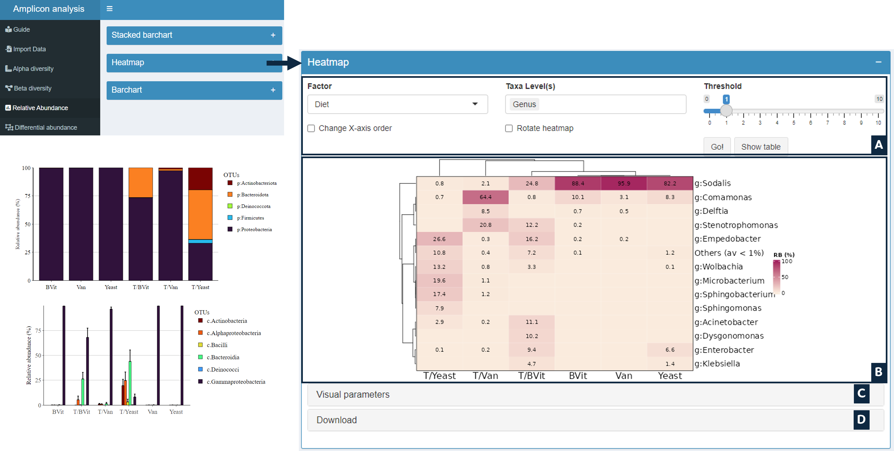
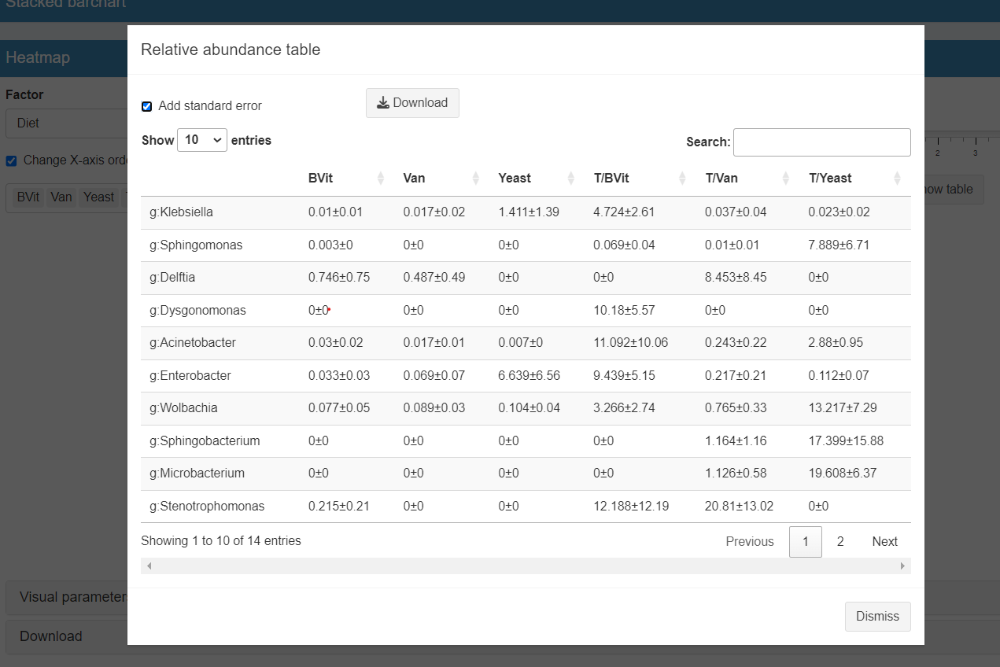

This section aims to explore the most abundance taxon based on the relative abundance values. Users select a category from the metadata list, the taxonomic level(s) where all the OTUs with the same level will be combined, and the threshold of relative abundant taxon to visualize. The results can be displayed in various plots: stacked bar chart, heatmap, or basic bar chart.
User Interface

- A: Dynamic Input
- B: Output: Result graph as stacked bar chart, heatmap, or basic bar chart depending to the used section
- C: Customize graph: Labels size, x.axis angle, etc.
- D: Download current graph in PDF or PNG format
Options
- Factor: Select factor from the categorial variables in mapping file
- Change X-axis order: Change the element's order of the selected factor
- Taxa level: By selecting the taxomony level to visualize, all the OTUs with the same selected level will be combined
- Threshold: Select the minimum relative abundance threshold of taxon to visualise (max=10%)
Output
- Graph: Stacked bar chart, heatmap, or basic bar chart depending to the used section.
- Relative abudancd table: Relative abundance values per selected group with standar error. The table is accessible from show table button.
